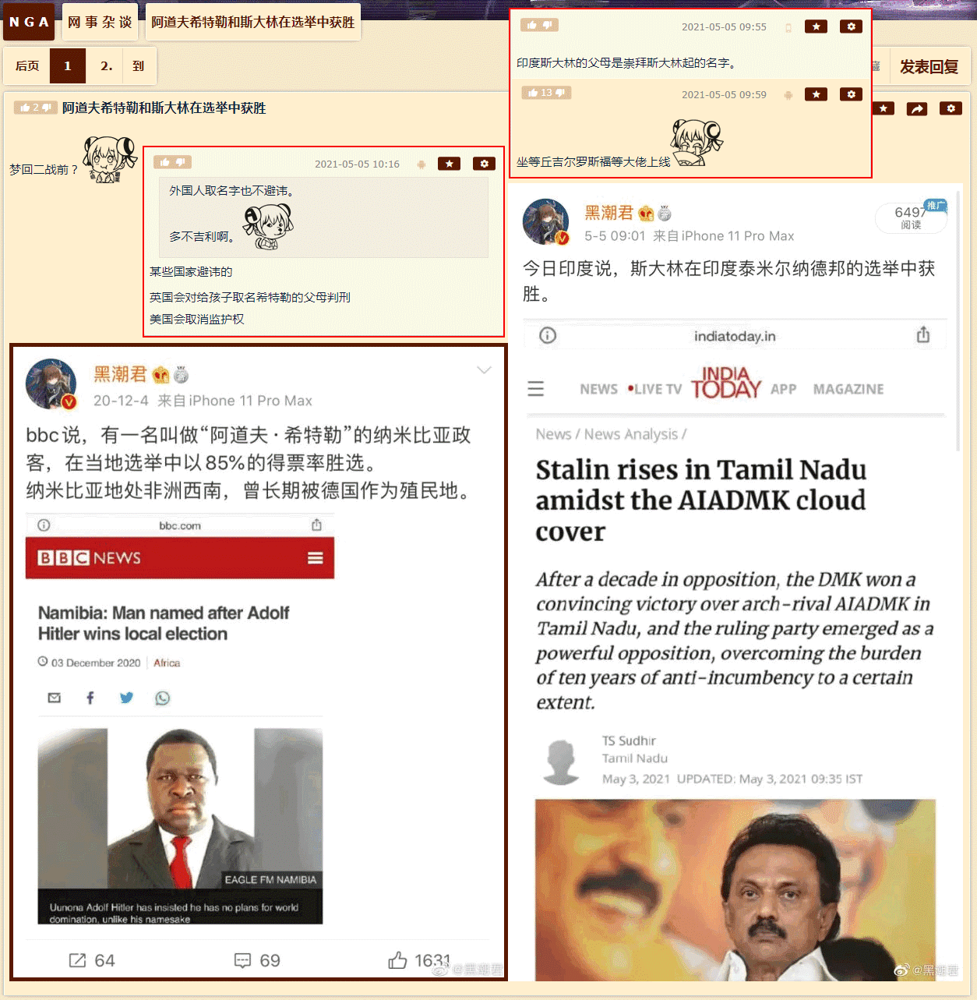

洗完澡了精神抖擞容光焕发，上网乱转发现国际化大都市「华语第一精日论坛」正在首页今日头条位置醒目应景推荐了一条色目含量难以判断的重要情报：
特意连着版规和站规一起备份，甚至懒得点开正文，压根不操心文曲星如何绘声绘色图文并茂的贩卖焦虑时运用的修辞伎俩，是为了论证活蹦乱跳的色目情报掮客和娱乐至死の色目逗哔只能通过娱乐新闻至少社会新闻指桑骂槐了。
也就是说，现在「知名育儿博主」相关放风带节奏，已经尽可能避免九点四亿傻哔联想到当年「嫡母」江青与「庶子」毛岸英之间从「豪门恩怨伦理剧」上纲上线到「九龙夺嫡宫斗剧」最终以「金戈铁马战争剧」为掩护实现牝鸡司晨女主临朝的色目钦定大目标。
至于为什么不能涉及「国外政治」，之江临安「原创文学论坛」之上就有反例，也是导致《设定集》剧情构思的重要素材，已经在注释〔卌六〕当中备份过：


看时间戳，还是2016年中和年底，虽然美帝灯塔国党の川普大统领候选人已经浮出水面，但是高卢国搭档古董花瓶的小鲜肉还没有。转过年来妈控才会以「黑马」形象另组第三方势力一路青云直上主席台，相关的情感话题才会在繁荣的简体中文互联网上广泛传播。直到最近，娱乐至死の色目逗哔二次元重度依赖症患者对《新时代复印战士》钦定大结局破口大骂如丧考妣，是不是九点四亿傻哔当中才有个别乙醇脱氢酶和乙醛脱氢酶分泌量较高于是清醒较早的记忆只有七秒钟的人民群众想明白前因后果了呢？
好了，「法兰西宫廷作风」与现实壹壹对应的来龙去脉已经大白于天下了，接下来轮到了「英吉利宫廷作风」了也。哎呀，「一说这个」，想必又有大批捧哏的朋友接下茬「那我可就不困了吖」，尤其是身处其它时区的读者。目前还没有时事新闻可供对照，哪怕知名赘婿薨掉那时候都没有任何色目情报掮客不打自招爆料泄漏（南不列颠及北爱尔兰）国家机密兼（跨国娱乐大鳄IP）宇宙奥秘，于是要按照职业习惯「严密的考虑问题」并且「料敌从宽」。
参考市面上曰若稽古流指桑骂槐，说「老佛爷」请来温莎家法把「珍妃」沉塘已经二十五年了，「光绪」还没挂么？无论「世上岂有七十年太子乎」持续到啥时候为止，即位的肯定是学龄前童年才俊并且有亲爹将其按在龙椅上哄着「快完了，快完了」……谁能应谶？当然是「焦治七世」George Alexander Louis Mountbatten-Windsor
了，于是查尔斯和威廉的下场，已经被好莱坞幕后黑手「制片人」钦定了，正在伦敦外景片场摄影棚当中彩排。
当然，正如知名篮球巨星神户在胡蜂看来不过是古罗马角斗士一般货色，退休了没有利用价值了就应该随着本尊谢幕而超度往生，但是了不起的盖茨比尔这种根红苗正的胡蜂待遇就不一样，即便英吉利老佛爷丧偶，这边影武者也就离个婚而已，所以查理三世和威廉五世的退场镜头，未必那么血腥，只不过一定会搞笑而已。
直说了吧，目前推测的最大可能性，就是上述「英吉利宫廷作风」的爆料，导致爷儿俩纷纷放弃继承权，一个是「第二代温莎公爵」，一个开先例封为「初代蒙巴顿公爵」，只要以铺天盖地的划时代娱乐新闻转移七八十亿傻哔视线以掩盖「王室丑闻」，这事就这么过去了。具体操作也有先例，正如爱德华八世「不爱江山爱美人」那样随便找个借口，太子已经有卡米拉了，太孙再找个美国寡妇出轨，老婆凯特再被妯娌梅根隔海嘲笑，然后离婚即可。
然后就看见了一条标着「育儿」标签的自由の言论，于是准备搜集「知名育儿博主」在全球兴风作浪的情报：
迅速浏览一遍，发现了「神户陨落（The Fall of KOBE
）」与「无产阶级韬光养晦企图革命未果沦为笑柄，极端组织已渗透至德意志民族神圣罗马帝国高层」俩关键字。
就事论事的回复也能往「家贼不死，球难未已」之类「无能狂怒」之上靠拢，与之前反复强调的重要指标「家贼预期寿命指数」有关。具体解读有两种：或者是现在正在炒作的「续命擂台赛」包括但不限于「天荒地老谁不老，谁为啥啥续疫苗一秒」之类顺口溜；或者「知名育儿博主」是法人而不是自然人，只要现金流不断就可以永生。
至少能当素材吧。
又在兲子脚下首善之区「黄脖子绿帽二代论坛」之上发现了一条色目含量甚低的重要情报：

这不是「娱乐新闻」而是「政治新闻」，参考哥萨克酋长国泽连斯基大盖特曼的先例，至少能判断出「摄影棚」覆盖范围。
可以操纵当地局势的前提，就是出动大手情报机构将党政军财各个要害部门渗透得如同筛子一般，还有强力手段对不甘心扮演记忆只有七秒钟的傻哔群众演员的人民进行严厉打击和残酷镇压，更要把持舆论喉舌宣扬「一力降十会，咋地吧」并出动党性坚定的老审查员将所有持不同学术观点者的「自由の言论」以「政治敏感」理由「亦当删去」。
未完待续